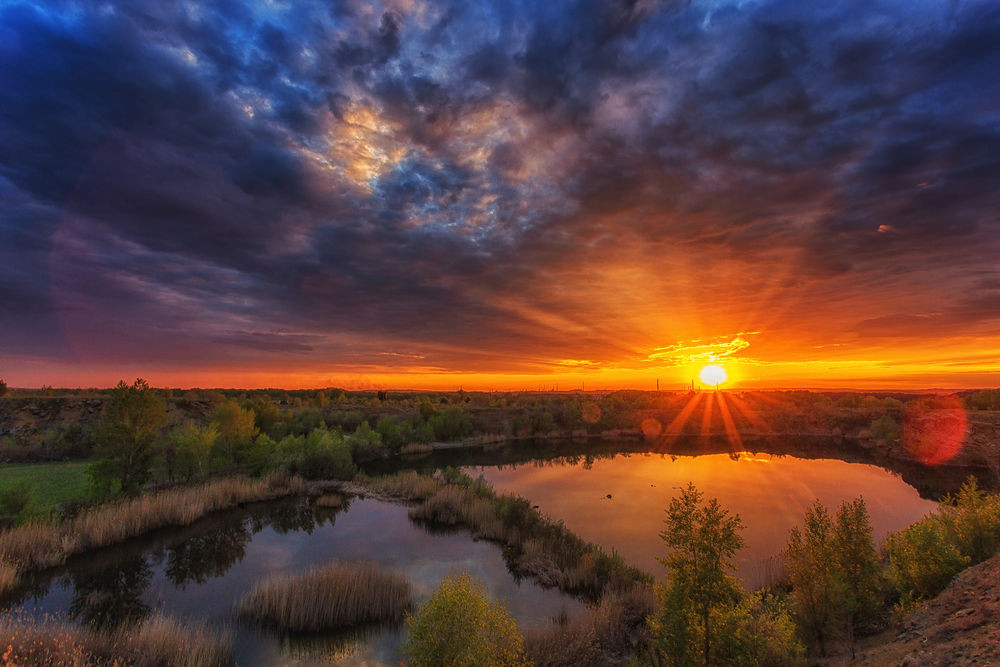

Горы

Гора — форма рельефа, изолированное резкое поднятие местности с выраженными склонами и подножием или вершина в горной стране.
Горизонт
Видимая граница неба и земной или водной поверхности, а также пространство неба над этой границей.

Пальмы

Семейство однодольных растений. Представлено большей частью древесными растениями с неразветвлёнными стволами, в которых происходит первичное утолщение.
Озеро
Озеро — компонент гидросферы, представляющий собой естественно возникший водоём, заполненный в пределах озёрной чаши водой
